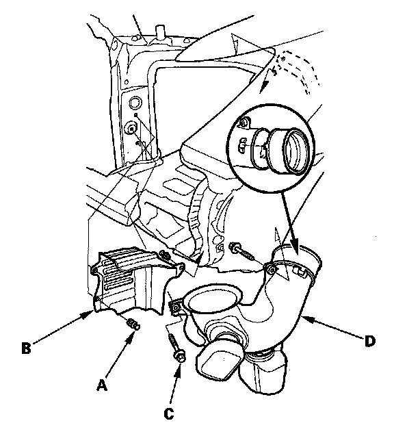

Resonator: Service and Repair
Resonator Removal/Installation1. Make sure you have anti-theft codes for the audio system and the navigation system (if equipped).
2. Remove the air cleaner.
3. Remove the battery.
4. Remove the front bumper.
5. Remove the left side headlight.

6. Remove the clips (A) and cover (B).
7. Remove the bolts (C), and resonator (D).
8. Install the parts in the reverse order of removal.
9. Reconnect the negative cable to the battery, then do this:
- Enter the anti-theft codes for the audio system and the navigation system (if equipped).
- Set the clock.
10. Adjust the headlight to local requirements.
11. Do the steering column position memorization.